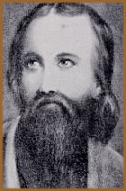
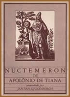

Um dos personagens mais influentes
da história antiga e também um dos menos citados
nas eras seguintes, foi Apolônio de Tiana. Sua biografia
confunde-se, e em alguns momentos parece se omitir da história.
Estudiosos e fabulistas conjecturam sobre sua vida, personalidade
e obras.
Apolônio
notabilizou-se para a posteridade como um filósofo
neo-pitagórico e professor. Assim, sabe-se que nasceu
na cidade de Tiana, Capadócia, Turquia, possivelmente
em 2 a.C.. Recebeu sua educação formal em
Tarso e em Aegae onde estudou medicina e as doutrinas pitagóricas.
Esteve também na Grécia, Assíria, Babilônia
e Índia, Mongólia, Tibet e um período
de isolamento no Himalaia, entrando em contato com o misticismo
dessas culturas e escolas iniciáticas como a Gnose
e o Hermetismo.
Foi neste momento que atraiu
a atenção de um jovem escriba de nome Damis,
o qual o acompanhou e tornou-se uma espécie de discípulo
e biógrafo pessoal de Apolônio.
Os registros de Damis compreendem,
além da vida de Apolônio, também uma
rica fonte de referências sobre aquele tempo. Foi
a partir do trabalho de Damis que tornou-se possível
construir uma biografia mais clara de Apolônio. Quando
estes escritos estiveram em poder da imperatriz romana Julia
Domma, esposa de Sétimo Severo, que os entregou a
Flavio Filóstrato que, por sua vez, recebeu a incumbência
de traçar a vida de Apolônio, elaborando assim
A Vida de Apolônio, a mais rica, mas não
necessariamente a mais confiável, fonte biográfica
do filósofo.
Apolônio esteve também
na Espanha e na Itália. No fim de sua vida, possivelmente
com aproximadamente cem anos de idade, instalou-se em Éfeso,
onde veio a falecer.
A obra que Apolônio
construiu em sua vida foi muito rica e seus tratados sobre
medicina, ciência e filosofia orientaram, mesmo que
indiretamente, o desenvolvimento destas áreas. Há
ainda, tratados alquímicos de autoria atribuídas
à Apolônio.
O
místico Apolônio
Através de algumas
fontes pode-se encontrar um Apolônio mais místico
do que filósofo e mais ocultista do que científico.
Entretanto, essas referências podem não ser
tão confiáveis; mas, certamente, ajudaram
a construir sua imagem e a solidificá-la na história.
Sob este aspecto, Apolônio
teria, assim como Cristo, nascido de uma virgem, bem como
sua vinda teria sido anunciada por um anjo. Ainda, teria
influenciado fortemente os seguidores de Cristo e assim
ajudado a fundamentar as bases que regem o catolicismo,
como a liturgia e o simbolismo.
Durante suas viagens pelo
oriente, acompanhado de Damis, iniciou-se em diversas doutrinas
e atingiu rapidamente os níveis mais elevados dos
mestres. Apolônio teria absorvido uma carga de sabedoria
que só seria possível se vivesse na Terra
por incontáveis anos. Acumulou conhecimentos sobre
o uso dos cristais, a aplicação das cores
nos templos sagrados, a utilização da música
como canal de contato com mundos superiores; além
de estudar simbologia, transmutações de elementos
da natureza, cura, o dom de profetizar, de se comunicar
com outros seres através de linguagens específicas
etc.
Um caráter místico
foi atribuído a sua pessoa. Por onde passava, Apolônio
era recebido como um poderoso sacerdote capaz de realizar
milagres, promover a cura de enfermos terminais e todo o
tipo de atividade sobrenatural.
Em Roma, teria ressuscitado
a filha de um governante. Também foi acusado de traição
aos imperadores Nero e Domiciano, isentando-se de tais acusações
por meios "mágicos". Certa vez, quando
encurralado por um grupo de cães ferozes prontos
para atacar, Apolônio simplesmente "desapareceu"
no ar frente a uma multidão.
O
Nuctemeron
A
um não iniciado é possível a aquisição
de apenas um trabalho autêntico de Apolônio
de Tiana, cujo o nome é Nuctemeron, mas
até mesmo dele existem também algumas edições
falsas. A palavra Nuctemeron pode ser traduzida
e interpretada como uma expressão equivalente à
O Dia de Deus que Resplandece nas Trevas ou simplesmente
o dia e a noite. A obra é um tratado de
cunho ocultista de autoria provável de Apolônio.
Este tratado traz doze "capítulos" distribuídos
como as doze primeiras horas do dia. Cada "hora"
seria uma instrução específica para
um grau de elevação espiritual. Desse modo,
os ensinamentos desta obra são apresentados em linguagem
um tanto velada, pois são ensinamentos de altíssimo
nível.
Portanto, seria uma evidência
de que Apolônio não apenas rondou os temas
herméticos, mas como também fora um estudioso
e praticante de modalidades distintas do ocultismo.
Apolônio
pela História
A obra Vida de Apolônio,
de Filóstrato, pode ser considerada uma narrativa
um tanto fantasiosa. Ao que parece, o autor tentou atribuir
à Apolônio um caráter divino comparável
à Cristo. Até mesmo a imagem do apóstolo
Paulo teria sido "inspirada" na imagem de Apolônio.
Mais de duzentos anos após
sua morte, Hierócles afirmava que a vida e as obras
de Apolônio eram mais relevantes que a de Cristo.
Adriano, o imperador romano, foi um entusiasta dos trabalhos
de Apolônio, promovendo sua disseminação
durante seu império. Na Idade Média, devido
a algumas semelhanças biográficas com Cristo,
a imagem de Apolônio foi denegrida pelo clero, considerando-o
um impostor ou mesmo um mago satânico. No século
XVII, Voltaire reafirmou a importância do filósofo.
De qualquer forma, o incógnito
personagem de Tiana enraizou-se na história e há
quase dois mil anos desperta interesse, curiosidade e admiração.
Por
Spectrum